Professional Conference - the poster gallery
For event organisersNot an organiser?
Find out how to optimise your poster submissions by displaying them in the poster gallery. This feature is only available in the Professional Conference package.#
What makes a poster appear#
The poster gallery is not a setting you switch on. It is a view of your submissions, and a poster only appears in it when all four of these are true:
- A question on your submission form has Poster gallery upload (1 allowed per event) ticked. This one question is what creates the gallery.
- The submitter has uploaded a file to that question.
- The submission has In poster gallery ticked in the decisions table.
- The submission has been Accepted.
Most setup problems are one of these four being missed, and the gallery cannot tell you which. If yours is empty, see If your poster gallery is empty.
Setting up your poster gallery will need to be undertaken in stages. The first stage is to set your submission form up to collect posters.
Go to Event dashboard → Abstract Management → Submissions → Form & setup → +QUESTION
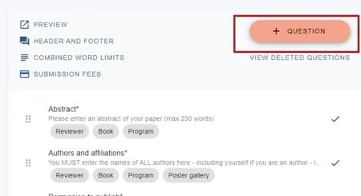
Click on Poster upload underneath Poster questions.
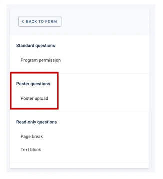
Fill in the details (see Question types for further guidance).
At the bottom of the question fields, tick the checkbox next to 1) Poster gallery upload (1 allowed per event). Checking this restricts uploads to PDFs only.
If you would like to enable users to download the posters, you should also tick 2) Allow poster downloads, which is ticked by default. In order for the posters to be visible in the program, you will also need to tick 3) In program.
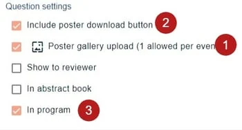
Click Create Question at the bottom of the page when you are done.
Adding other poster-related questions#
If you require, you can set other questions to allow submitters to add further details about their posters.
Keywords#
You can add a question about keywords, to let delegates filter the gallery by keyword. See the poster gallery view below.
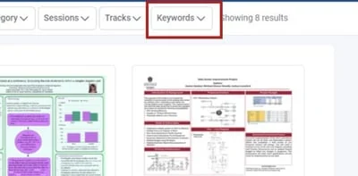
Click +QUESTION
The options are:
1) Submitters choose just one keyword from a choice created by the administrator
2) Submitters can choose multiple keywords from a choice created by the administrator
3) Submitters can add their own keywords
Presentation videos#
If a submitter has a video to supplement their poster, you can add option 4.
This will allow Youtube and Vimeo videos to be embedded directly within the poster gallery.
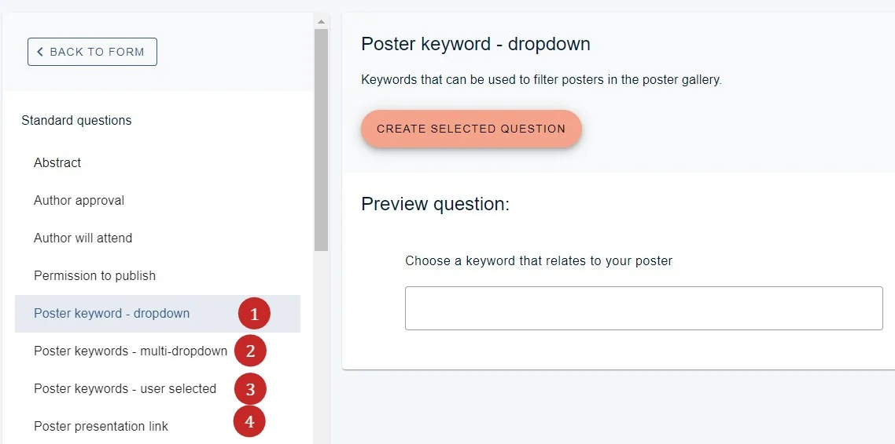
See Question types for further guidance.
Make your choice, complete the details and click CREATE QUESTION.
Once you have added one upload question, one keyword question and one presentation link, the Poster questions group disappears from the list. That is expected - you have added everything the gallery supports.
Choosing which information you would like included with the poster#
As with an abstract book, additional information collected from the submission form can be included with the poster in the gallery.
To add this, click on any question in the form, Scroll to the end and you will see some checkboxes. These apply tags to each question. To ensure the responses to the question is included in the poster gallery, check the relevant box.
For more information, see Question tags
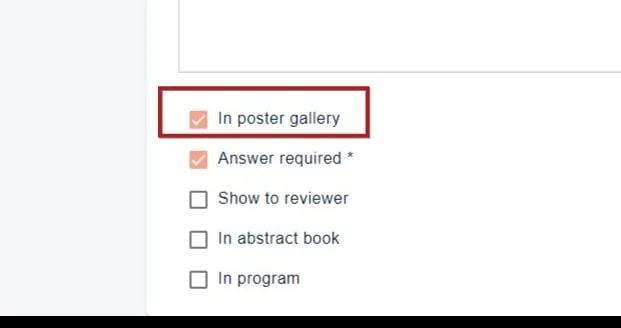
Selecting the posters you would like to appear in the poster gallery#
Once submissions are in and the reviewing stage is complete, you can then go to the decisions table to complete the next stage.
Ensure the columns below are visible. (See the decisions table)
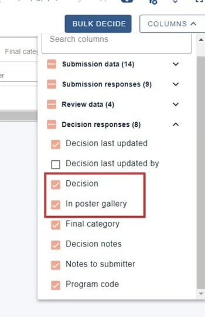
Scroll to the Decision and In poster gallery columns
For each submission that you want included in the poster gallery, ensure you accept the submission and check the In poster gallery checkbox. Both are needed - ticking the box on a submission that is still Pending does nothing.
To do this in bulk, tick the checkboxes beside the submissions you want, then click BULK DECIDE. Under Additional decision options you will find ADD TO POSTER GALLERY, and a REMOVE beside it to take posters back out again. See the decisions table.
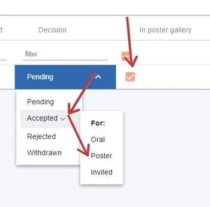
The poster gallery view in the conference program#
In the left hand menu, you will see the poster gallery icon. Click to view
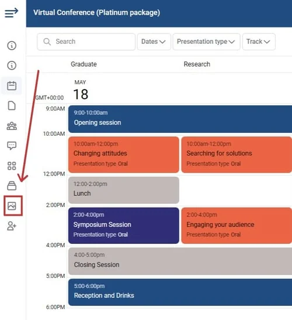
The poster gallery will then display. Users can
1) Search by poster title or author affiliation (the search box does not cover abstracts or keywords)
2) Sort alphabetically
3) Choose list or grid view
4) Choose posters according to the sessions they appear in (to add posters to sessions, see Attaching content to sessions
5) Filter by tracks (see Setting up your program - configuration) or / and 6) keywords (see above).
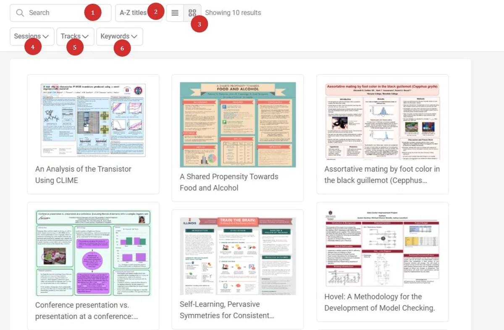
Clickng on an individual poster will allow the user to
1) Download the poster if permissions are set (see above)
2) View the full abstract details (see Question tags to set visibility of the submission form data)
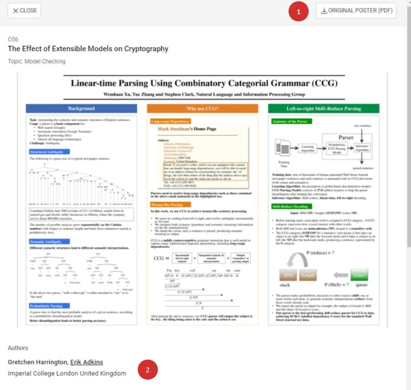
Didn't solve it? Ask our support team
No question is too small, and there's no charge for asking. Raise a ticket and someone who knows the software will pick it up.
Did this page solve it?
Thanks — this helps us fix it.